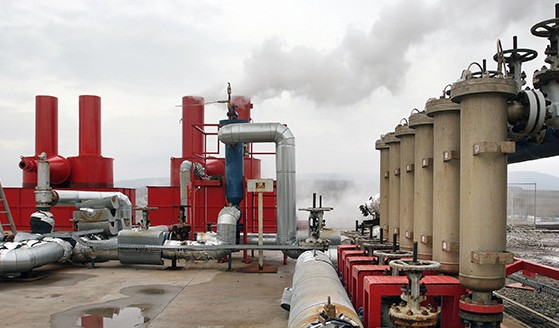

Geothermal power sheds its hot-spring roots
GEOTHERMAL energy, long a poor relation among the more glamorous renewable technologies of wind and solar power, is poised to smarten its dowdy image. Piping-hot underground water and steam, percolating up through fissures in rocks fractured by seismic activity, have been a welcome feature of the European landscape since the Romans popularised bathing. On the other side of the globe, the Japanese have luxuriated since the Heian era in hot-spring onsen that dot their volcanic and quake-strewn archipelago. Even so, as a source of renewable energy, geothermal electricity has gone largely ignored as fortunes have been heaped on its rivals.
Today, a handful of countries that sit astride seismic belts or have active volcanoes in their midst, such as Iceland, the Philippines, Costa Rica and New Zealand, get a significant proportion of their heat and electricity from geothermal sources. America actually has more geothermal generating capacity (3.4 gigawatts) than any other country. But because of its huge resources of coal and natural gas, along with heavy investments in hydroelectricity and nuclear power, geothermal juice contributes a mere 0.3% of its electrical output.